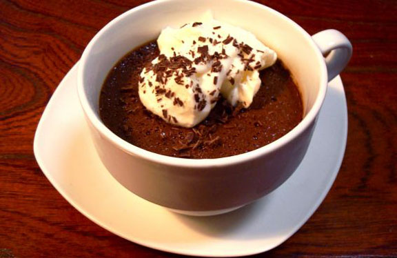

- Yield: 1 Cup
- Servings 1
- Prep Time: 10m
- Cook Time: 10m
- Ready In: 15m
Average Member Rating
* * * * (4.3/5)
Rate this recipe
* * * * *
319 people rated this recipe
Nutritional Info
This information is per serving.
Fat
500mg
Sodium
30mg
Ingredients (For the puddings)
- 2 cups cream
- 120 grams dark chocolate, chopped
- 2 bags of earl grey tea
- 6 egg yolks
- 3 Tablespoons of sugar
Ingredients (For the Cointreau cream)
- 1/2 cup whipping cream
- 2 Tablespoons powdered sugar
- 2-3 Teaspoons cointreau
Method
-
Step 1
Pots de Creme is a thick and rich pudding that's baked and served chilled. This one uses earl gray tea in addition to chocolate to give it a more fragrant touch. I served it with a Cointreau ( an orange-flavored liqueur) whipped cream.
-
Step 2
Preheat your oven to 325 Fahrenheit with a rack in the center. Heat cream in a pan over medium with the tea bags fully submerged until the cream is almost simmering. Try to keep them moving, so the tea can infuse the cream. Press and remove the tea bags before adding the chocolate and stirring until fully blended.
-
Step 3
Mix your yolks with the sugar until smooth, then add your hot cream mixture gradually, whisking together. Set your ramkins or mugs onto a baking pan. Distribute the pudding evenly and then add hot water to the pan until it comes about halfway up the pudding dishes.
-
step 4
Bake for about 25 minutes, or until the top and edges set. Let cool and refrigerate for at least 2 hours before adding the whipped cream, any desired garnish and serving. This recipe makes about 6 3/4 cup ramkins or 3-4 mugs.